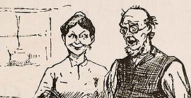

| Defaced Illustration. Click to enlarge.  |
Selling Huck Finn |
|
The Barrett Collection contains two slightly different versions of the sales prospectus for Huck Finn -- two, because the prospectus comes with a story of its own. After Webster & Co. had printed 3000 copies of the volume and shipped at least 250 into the field, an agent in Chicago discovered that someone -- it was never discovered whom -- had altered an illustration of Silas Phelps from Chapter 32 to expose him (and MT) in a way that would have outraged contemporary sensibilities. To see why, click on the image top left. Agents were told to tear out the offending page and send it in or be fired; unshipped prospectuses were rebound without it. While costly, the incident did generate publicity for the book. According to an account about the event in the New York World (28 November 1884), "several opposition publishers" got hold of the obscene engraving and used it to "adorn their respective offices." The entire prospectus, as shown to potential buyers and so missing the defaced picture, is reproduced below in the two-page format used throughout this archive. (For more on subscription publishing, see Marketing Twain. For a simulation of how a book agent displayed a prospectus, see Calling on a Customer.) The pages are numbered as listed, indicating their place in the forthcoming novel, and illustrations are indicated by their captions. Every page can be accessed separately -- or you can tour fifteen pages chosen to represent the whole (these are the pages marked on the list below with asterisks). There are three different ways to "tour" them. The first allows you to "turn" the pages at your own pace, and to move backward or forward through the prospectus. If you take either of the two "auto-tours," the pages will "flip" forward automatically. The small page version takes just over two minutes; the larger page version, just under three. |
Auto-Tour |
Auto-Tour |